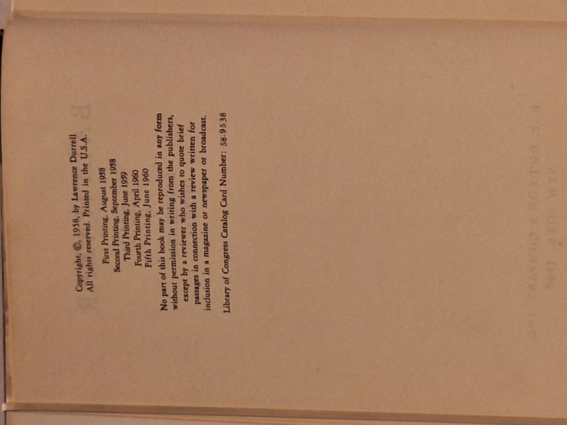

Balthazar
Lawrence Durrell · E. P. Dutton & Co., New York, 1958

C$135 · Good condition
E. P. Dutton & Company, New York, 1960. Copyright (c) 1958 by Lawrence Durrell. This copy: Fifth Printing June 1960 (First Printing August 1958, Second September 1958, Third June 1959, Fourth April 1960). LCCN 58-9538. Second novel of the Alexandria Quartet - the same events of Justine recounted from a different angle by Balthazar the physician, peeling back the first novel's narrative to reveal what was misunderstood. Hardcover with original pictorial dust jacket (red field, orange umbrella, white horse/profile illustration, 'A novel by Lawrence Durrell, Author of Justine'). Reading copy of the US edition. Companion Quartet volumes from the same collection available.
Details
- Publisher: E. P. Dutton & Co., New York, 1958
- Binding: Hardcover
- Edition: Fifth Printing, June 1960 (later printing of the 1958 US first)
- Condition: Good
- Dust jacket: Good
- Category: Literary Fiction